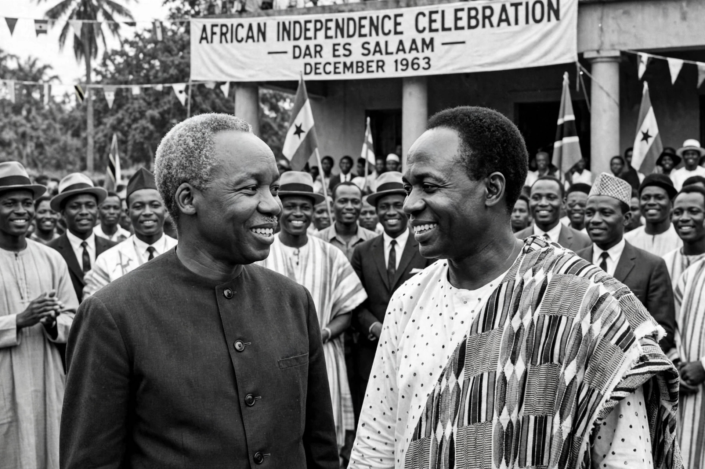

African socialism is a set of political and economic ideologies advanced by leaders of newly independent African states in the 1960s and 1970s. Its proponents — among them Kwame Nkrumah of Ghana, Julius Nyerere of Tanzania, Léopold Sédar Senghor of Senegal, Kenneth Kaunda of Zambia, Modibo Keïta of Mali, and Ahmed Sékou Touré of Guinea — argued that traditional African communal values, such as extended-family solidarity and village consensus, provided an indigenous basis for socialism distinct from European Marxism, and that class struggle in the Marxist sense did not apply to African societies.
| African socialism | |
|---|---|
 Julius Nyerere and Kwame Nkrumah at an independence celebration Nyerere's ujamaa was the classic formulation | |
| Key figures | Nkrumah, Nyerere, Senghor, Kaunda, Touré, Keïta |
| Key documents | Arusha Declaration (1967) |
| Variants | Ujamaa, Zambian Humanism, consciencism |
| Economic policy | State ownership, villagisation, planned development |
African socialist thinkers generally held that pre-colonial African society was communal and classless, and that colonialism, rather than internal class conflict, was the source of exploitation. From this they drew policies of state-led development: nationalisation of foreign-owned enterprises and key industries, collective or cooperative agriculture, one-party rule justified as expressing national unity rather than class dictatorship, and an emphasis on self-reliance (kujitegemea). Many also embraced non-alignment and pan-Africanism.
Critics charged that African socialism legitimised authoritarian one-party rule, that villagisation and collectivisation reduced agricultural output, and that corrupt state elites enriched themselves despite egalitarian rhetoric. By the 1980s, most African socialist states had adopted structural adjustment programmes under pressure from the IMF and World Bank, and the end of the Cold War in 1991 effectively closed the era. Elements of the tradition persist in the platforms of parties such as Tanzania's Chama Cha Mapinduzi (CCM).
Categories: Socialism in Africa · Political ideologies · Pan-Africanism